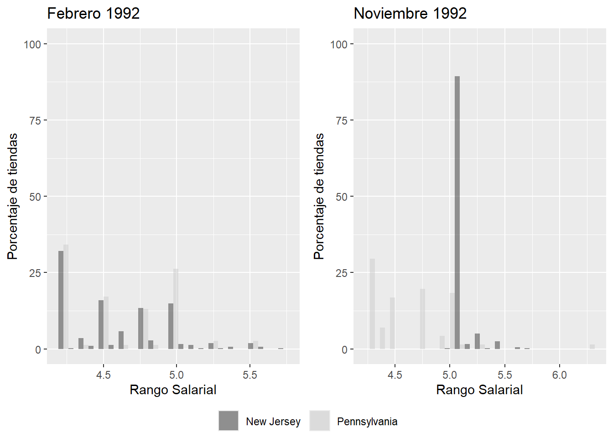
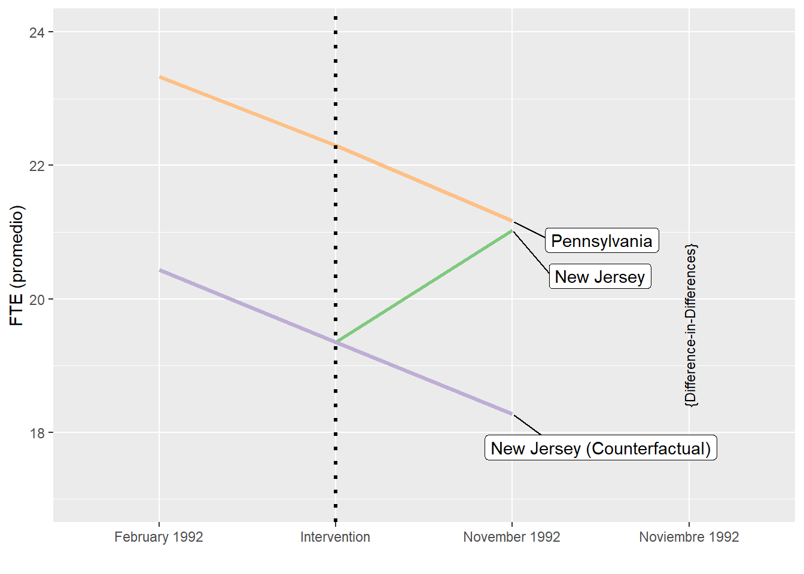

FACULTAD DE CIENCIAS SOCIALES - PUCP
Curso: SOC294 - Estadística para el análisis sociológico 2
Semestre 2025 - 1
Este método es una herramienta poderosa y muy utilizada en ciencias sociales para evaluar el impacto de políticas, programas o intervenciones sociales. Si alguna vez te has preguntado cómo medir el efecto real de una nueva ley, un programa social o cualquier intervención, este método te será de gran ayuda.
Diferencias en Diferencias es una técnica que compara cambios a lo largo del tiempo entre un grupo que recibe una intervención (grupo de tratamiento) y otro que no la recibe (grupo de control). La idea es simple pero poderosa: si queremos saber el efecto de una política, no solo comparamos grupos antes y después, sino que también tomamos en cuenta las diferencias que ya existían entre ellos.
En sociología, muchas veces nos enfrentamos a preguntas como:
¿Funcionó realmente esa política pública para reducir la pobreza?
¿El programa de educación mejoró el rendimiento escolar?
¿La intervención comunitaria redujo los niveles de violencia?
Dif-in-Dif nos permite responder estas preguntas de manera más precisa, controlando factores que podrían confundir nuestros resultados.
Antes y después: Observamos qué pasó antes y después de la intervención en ambos grupos.
Comparación entre grupos: Comparamos el grupo que recibió la intervención con el que no la recibió.
Aislamos el efecto: Restamos las diferencias naturales entre los grupos (que existían antes de la intervención) para quedarnos solo con el efecto de la intervención.
EFECTO DIF-IN-DIF = (Y_post,T - Y_pre,T) - (Y_post,C - Y_pre,C)
Y_post,T: Resultado promedio del grupo de tratamiento después de la intervención.
Y_pre,T: Resultado promedio del grupo de tratamiento antes de la intervención.
Y_post,C: Resultado promedio del grupo de control después de la intervención.
Y_pre,C: Resultado promedio del grupo de control antes de la intervención.
Primera diferencia (grupo de tratamiento): Calculas la diferencia en el resultado del grupo de tratamiento antes y después de la intervención: Diferencia Tratamiento = Y_post,T - Y_pre,T
Segunda diferencia (grupo de control): Calculas la diferencia en el resultado del grupo de control antes y después de la intervención: Diferencia Control = Y_post,C - Y_pre,C
Diferencias en Diferencias: Restas la diferencia del grupo de control a la diferencia del grupo de tratamiento para aislar el efecto de la intervención: EFECTO DIF-IN-DIF = Diferencia Tratamiento - Diferencia Control
Asignación aleatoria (o casi aleatoria) de los grupos de tratamiento y control.
¿Qué significa? El grupo que recibe la intervención (tratamiento) y el grupo que no la recibe (control) deben ser comparables. Idealmente, la asignación a estos grupos debería ser aleatoria, como en un experimento. Sin embargo, en muchos casos de sociología o economía, esto no es posible, por lo que se busca que la asignación sea “casi aleatoria” (es decir, que no haya diferencias sistemáticas entre los grupos antes de la intervención).
Un período previo y un período posterior para ambos grupos.
¿Qué significa? Necesitas datos de ambos grupos (tratamiento y control) antes y después de la intervención. Esto te permite comparar cómo cambian los resultados en ambos grupos a lo largo del tiempo.
Sin sesgo de selección de la muestra.
¿Qué significa? Los grupos de tratamiento y control deben ser seleccionados de manera que no haya un sesgo sistemático en su composición. Por ejemplo, si el grupo de tratamiento tiene características inherentemente diferentes al grupo de control (como un mayor nivel socioeconómico), esto podría distorsionar los resultados.
Debe haber tendencias paralelas.
¿Qué significa? Antes de la intervención, los grupos de tratamiento y control deben seguir tendencias paralelas en la variable de resultado. Es decir, si el grupo de tratamiento estaba aumentando (o disminuyendo) su resultado a una tasa similar a la del grupo de control, se asume que, en ausencia de la intervención, esta tendencia habría continuado.
Imagina que un gobierno implementa un programa de becas para mejorar el rendimiento académico en ciertas escuelas (grupo de tratamiento). Otras escuelas no reciben el programa (grupo de control). Con Dif-in-Dif, comparamos el cambio en el rendimiento antes y después del programa en ambas escuelas. Si el grupo de tratamiento mejora más que el de control, podemos atribuir esa diferencia al programa de becas.
Ecuación de la regresión DiD
Yit=β0+β1⋅Treatedi+β2⋅Postt+β3⋅(Treatedi×Postt)+εit
Variables explicadas:
• Yit → Variable de resultado para la unidad ii en el tiempo tt. • Treatedi → Variable binaria (1 si la unidad ii pertenece al grupo de tratamiento, 0 si es control). • Postt → Variable binaria (1 si el periodo tt es posterior a la intervención, 0 si es antes). • Treatedi×Postt → Término de interacción (captura el efecto causal del tratamiento). • εit → Término de error.
Interpretación de coeficientes: • β0 → Media de Y para el grupo de control en el periodo previo. • β1 → Diferencia inicial entre grupos (tratamiento vs. control) antes de la intervención. • β2 → Cambio temporal común (efecto de tendencia en el grupo de control). • β3 → Efecto Dif-in-Dif (efecto causal del tratamiento).
library(dplyr)##
## Attaching package: 'dplyr'## The following objects are masked from 'package:stats':
##
## filter, lag## The following objects are masked from 'package:base':
##
## intersect, setdiff, setequal, unionlibrary(readr)
library(ggplot2)
library(tidyr)
library(sjlabelled)## Warning: package 'sjlabelled' was built under R version 4.4.2##
## Attaching package: 'sjlabelled'## The following object is masked from 'package:ggplot2':
##
## as_label## The following object is masked from 'package:dplyr':
##
## as_labellibrary(ggrepel)
library(scales)##
## Attaching package: 'scales'## The following object is masked from 'package:readr':
##
## col_factorlibrary(ggpubr)
library(plm)## Warning: package 'plm' was built under R version 4.4.2##
## Attaching package: 'plm'## The following objects are masked from 'package:dplyr':
##
## between, lag, leadlibrary(lmtest)## Loading required package: zoo##
## Attaching package: 'zoo'## The following objects are masked from 'package:base':
##
## as.Date, as.Date.numericlibrary(rio)
data=import("DD1.RData")## Warning: The `trust` argument of `import()` should be explicit for serialization formats
## as of rio 1.0.3.
## ℹ Missing `trust` will be set to FALSE by default for RData in 2.0.0.
## ℹ The deprecated feature was likely used in the rio package.
## Please report the issue at <https://github.com/gesistsa/rio/issues>.
## This warning is displayed once every 8 hours.
## Call `lifecycle::last_lifecycle_warnings()` to see where this warning was
## generated.#Según el documento, los equivalentes a tiempo completo o full time employment (FTE) se componen de empleados a tiempo completo, directivos y empleados a tiempo parcial (emptot). Estos últimos se multiplican por el factor 0,5 antes de entrar en el cálculo. Además, se genera la proporción de empleados a tiempo completo de todos los ETC (pct_ftw).
#emptot = empft + nmgrs + 0.5 * emppt
#pct_fte = empft / emptot * 100data %>%
select(chain, state) %>%
table() %>%
prop.table(margin = 2) %>%
apply(MARGIN = 2,
FUN = scales::percent_format(accuracy = 0.1)) %>%
noquote## state
## chain New Jersey Pennsylvania
## bk 41.1% 44.3%
## kfc 20.5% 15.2%
## roys 24.8% 21.5%
## wendys 13.6% 19.0%data %>%
filter(observation == "February 1992") %>%
group_by(state) %>%
summarise(emptot = mean(emptot, na.rm = TRUE),
pct_fte = mean(pct_fte, na.rm = TRUE),
wage_st = mean(wage_st, na.rm = TRUE),
hrsopen = mean(hrsopen, na.rm = TRUE)) %>%
pivot_longer(cols=-state, names_to = "variable") %>%
pivot_wider(names_from = state, values_from = value)## # A tibble: 4 × 3
## variable `New Jersey` Pennsylvania
## <chr> <dbl> <dbl>
## 1 emptot 20.4 23.3
## 2 pct_fte 32.8 35.0
## 3 wage_st 4.61 4.63
## 4 hrsopen 14.4 14.5data %>%
filter(observation == "November 1992") %>%
group_by(state) %>%
summarise(emptot = mean(emptot, na.rm = TRUE),
pct_fte = mean(pct_fte, na.rm = TRUE),
wage_st = mean(wage_st, na.rm = TRUE),
hrsopen = mean(hrsopen, na.rm = TRUE)) %>%
pivot_longer(cols=-state, names_to = "variable") %>%
pivot_wider(names_from = state, values_from = value)## # A tibble: 4 × 3
## variable `New Jersey` Pennsylvania
## <chr> <dbl> <dbl>
## 1 emptot 21.0 21.2
## 2 pct_fte 35.9 30.4
## 3 wage_st 5.08 4.62
## 4 hrsopen 14.4 14.7# Histograma para febrero de 1992
hist.feb <- data %>%
filter(observation == "February 1992") %>%
ggplot(aes(x = wage_st, fill = state)) +
geom_histogram(
aes(y = after_stat(100 * count / tapply(count, group, sum)[group])),
alpha = 0.5,
position = "dodge",
bins = 23
) +
labs(
title = "Febrero 1992",
x = "Rango Salarial",
y = "Porcentaje de tiendas",
fill = ""
) +
scale_fill_grey() +
scale_y_continuous(limits = c(0, 100))
# Histograma para noviembre de 1992
hist.nov <- data %>%
filter(observation == "November 1992") %>%
ggplot(aes(x = wage_st, fill = state)) +
geom_histogram(
aes(y = after_stat(100 * count / tapply(count, group, sum)[group])),
alpha = 0.5,
position = "dodge",
bins = 23
) +
labs(
title = "Noviembre 1992",
x = "Rango Salarial",
y = "Porcentaje de tiendas",
fill = ""
) +
scale_fill_grey() +
scale_y_continuous(limits = c(0, 100))
# Combinar los gráficos
ggpubr::ggarrange(
hist.feb,
hist.nov,
ncol = 2,
common.legend = TRUE,
legend = "bottom")## Warning: Removed 20 rows containing non-finite outside the scale range (`stat_bin()`).
## Removed 20 rows containing non-finite outside the scale range (`stat_bin()`).## Warning: Removed 21 rows containing non-finite outside the scale range
## (`stat_bin()`).
differences <- data %>%
group_by(observation, state) %>%
summarise(emptot = mean(emptot, na.rm = TRUE))## `summarise()` has grouped output by 'observation'. You can override using the
## `.groups` argument.# Treatment group (NJ) before treatment
njfeb <- differences[1,3]
# Control group (PA) before treatment
pafeb <- differences[2,3]
# Treatment group (NJ) after treatment
njnov <- differences[3,3]
# Control group (PA) after treatment
panov <- differences[4,3]El efecto medio del tratamiento o Average Treatment Effect (ATE) se refiere al efecto promedio que tiene una intervención, tratamiento o política sobre el grupo que la recibió (el grupo de tratamiento). En otras palabras, el ATT mide cuánto cambió el resultado de interés (por ejemplo, ingresos, rendimiento académico, salud) para aquellos que recibieron el tratamiento, en comparación con lo que habría ocurrido si no lo hubieran recibido.
En este contexto puede determinarse de dos maneras:
(njnov-njfeb)-(panov-pafeb) ## emptot
## 1 2.753606(njnov-panov)-(njfeb-pafeb)## emptot
## 1 2.753606Representar gráficamente la relación entre el grupo de tratamiento y el de control puede ser muy útil para comprender el enfoque DiD. En primer lugar, se utiliza las diferencias de la variable emptot calculadas en el paso anterior para NJ y PJ en febrero y noviembre. Además, necesitamos el resultado de NJ si el tratamiento (aumento del salario mínimo) no se hubiera producido. Esto se denomina resultado contrafactual (nj_counterfactual). El supuesto DiD establece que las tendencias del grupo de tratamiento y del grupo de control son idénticas hasta que tiene lugar el tratamiento. Por lo tanto, sin el tratamiento, el empleo (emptot) de NJ disminuiría de febrero a noviembre en la misma proporción que el de PA. Se añade tres puntos de datos adicionales para representar una línea de intervención en el gráfico que indica el evento de tratamiento.
# Calculate counterfactual outcome
nj_counterfactual <- tibble(
observation = c("February 1992","November 1992"),
state = c("New Jersey (Counterfactual)","New Jersey (Counterfactual)"),
emptot = as.numeric(c(njfeb, njfeb-(pafeb-panov)))
)
# Data points for treatment event
intervention <- tibble(
observation = c("Intervention", "Intervention", "Intervention"),
state = c("New Jersey", "Pennsylvania", "New Jersey (Counterfactual)"),
emptot = c(19.35, 22.3, 19.35)
)
# Combine data
did_plotdata <- bind_rows(differences,
nj_counterfactual,
intervention)did_plotdata %>%
mutate(label = if_else(observation == "November 1992", as.character(state), NA_character_)) %>%
ggplot(aes(x=observation,y=emptot, group=state)) +
geom_line(aes(color=state), size=1.2) +
geom_vline(xintercept = "Intervention", linetype="dotted",
color = "black", size=1.1) +
scale_color_brewer(palette = "Accent") +
scale_y_continuous(limits = c(17,24)) +
ggrepel::geom_label_repel(aes(label = label),
nudge_x = 0.5, nudge_y = -0.5,
na.rm = TRUE) +
guides(color=FALSE) +
labs(x="", y="FTE (promedio)") +
annotate(
"text",
x = "Noviembre 1992",
y = 19.6,
label = "{Difference-in-Differences}",
angle = 90,
size = 3
)## Warning: Using `size` aesthetic for lines was deprecated in ggplot2 3.4.0.
## ℹ Please use `linewidth` instead.
## This warning is displayed once every 8 hours.
## Call `lifecycle::last_lifecycle_warnings()` to see where this warning was
## generated.## Warning: The `<scale>` argument of `guides()` cannot be `FALSE`. Use "none" instead as
## of ggplot2 3.3.4.
## This warning is displayed once every 8 hours.
## Call `lifecycle::last_lifecycle_warnings()` to see where this warning was
## generated.
Con la regresión lineal, este resultado puede obtenerse muy fácilmente. En primer lugar, tenemos que crear dos variables ficticias. Una indica el inicio del tratamiento (tiempo) y es igual a cero antes del tratamiento e igual a uno después del tratamiento. La otra variable separa las observaciones en un grupo de tratamiento y otro de control (tratados). Esta variable ficticia es igual a uno para los restaurantes de comida rápida situados en Nueva Jersey e igual a cero para los situados en Pensilvania.
data <- mutate(data, time = ifelse(observation == "November 1992", 1, 0),
treated = ifelse(state == "New Jersey", 1, 0)
)Y = b0 + b1 * Tratamiento + b2 * Post + b3 * (Tratamiento * Post) + Error
Y: Es la variable de resultado que estás midiendo (por ejemplo, salario, rendimiento académico, etc.).
b0: Es el valor esperado de Y cuando todas las demás variables son cero. Representa el valor base del grupo de control antes de la intervención.
b1 * Tratamiento:
Tratamiento: Es una variable binaria que toma el valor 1 si el individuo pertenece al grupo de tratamiento y 0 si pertenece al grupo de control.
b1: Mide la diferencia en Y entre el grupo de tratamiento y el grupo de control antes de la intervención.
b2 * Post:
Post: Es una variable binaria que toma el valor 1 si es el período posterior a la intervención y 0 si es el período anterior.
b2: Mide el cambio en Y para el grupo de control entre el período anterior y posterior a la intervención.
b3 * (Tratamiento * Post):
Tratamiento * Post: Es la interacción entre las variables “Tratamiento” y “Post”. Toma el valor 1 solo para el grupo de tratamiento en el período posterior a la intervención.
b3: Es el coeficiente de interés. Mide el efecto DiD, es decir, el impacto de la intervención en el grupo de tratamiento después de la intervención, neto de los cambios en el grupo de control.
Error: Representa los factores no observados que afectan a Y.
did_model <- lm(emptot ~ time + treated + time:treated, data = data)
summary(did_model)##
## Call:
## lm(formula = emptot ~ time + treated + time:treated, data = data)
##
## Residuals:
## Min 1Q Median 3Q Max
## -21.166 -6.439 -1.027 4.473 64.561
##
## Coefficients:
## Estimate Std. Error t value Pr(>|t|)
## (Intercept) 23.331 1.072 21.767 <2e-16 ***
## time -2.166 1.516 -1.429 0.1535
## treated -2.892 1.194 -2.423 0.0156 *
## time:treated 2.754 1.688 1.631 0.1033
## ---
## Signif. codes: 0 '***' 0.001 '**' 0.01 '*' 0.05 '.' 0.1 ' ' 1
##
## Residual standard error: 9.406 on 790 degrees of freedom
## (26 observations deleted due to missingness)
## Multiple R-squared: 0.007401, Adjusted R-squared: 0.003632
## F-statistic: 1.964 on 3 and 790 DF, p-value: 0.118# Declare as panel data
panel <- pdata.frame(data, "sheet")## Warning in pdata.frame(data, "sheet"): column 'time' overwritten by time index# Within model
did.reg <- plm(emptot ~ time + treated + time:treated,
data = panel, model = "within")
# obtain clustered standard errors
coeftest(did.reg, vcov = function(x)
vcovHC(x, cluster = "group", type = "HC1"))##
## t test of coefficients:
##
## Estimate Std. Error t value Pr(>|t|)
## time2 -2.2833 1.2465 -1.8319 0.06775 .
## time2:treated 2.7500 1.3359 2.0585 0.04022 *
## ---
## Signif. codes: 0 '***' 0.001 '**' 0.01 '*' 0.05 '.' 0.1 ' ' 1